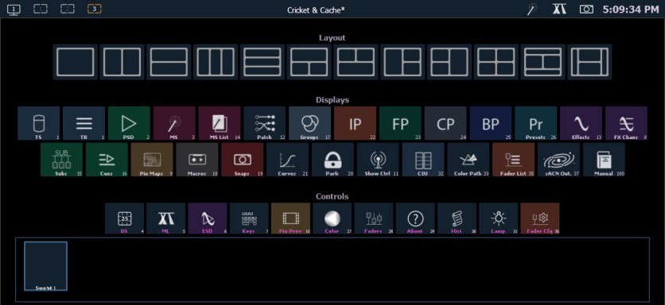
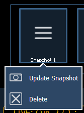

Upon start up or creation of a new show file, any connected monitor that is not already displaying the Live (Tab 1) or Playback Status Displays (Tab 2) will show the Display Management Home Screen.

This screen consists of four general areas, each offering different display-related options:
These tools offer you greater flexibility in the number of tabs you can view in any given workspace. A workspace can have up to four frames. Selecting a layout icon will assign the frame layout identified in the icon. Once a layout is assigned, you can select which displays and controls will be in which frames.
See Displays for more information.
Clicking on an icon will open the appropriate display or control in a new tab.
The snapshots displayed here are single monitor-only snapshots recorded for the visible workspace. For information about snapshots, see About Snapshots . These snapshots can be recalled from any selected monitor from the Home Screen or the Display Controls menu screen. You can recall a monitor-only snapshot from the command line by using the syntax [Snapshot] [n] [Enter]. When recalled from the command line, the selected snapshot will only affect the monitor from which it was originally recorded.
To record a monitor-only snapshot, press the {New Snapshot} button on the Display Controls menu screen. [Delete] [Snapshot] [n] [Enter] [Enter] will delete a monitor-only snapshot.
All snapshots can be viewed on the snapshot list display, which can be opened by pressing [Snapshot] [Snapshot] or from the home screen.
A single monitor snapshot can be updated or deleted by right clicking on its icon in the Snapshot area of the Home screen.
